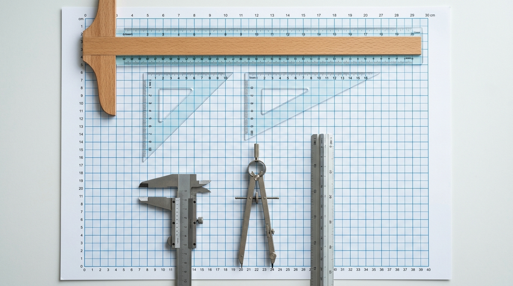
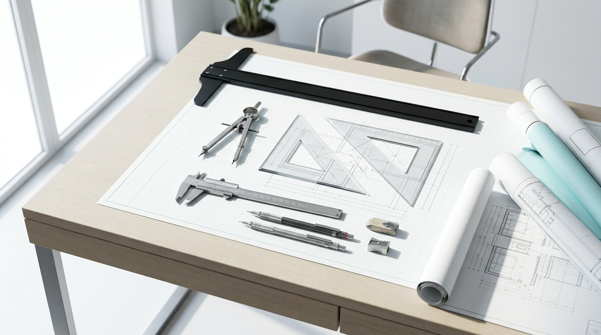
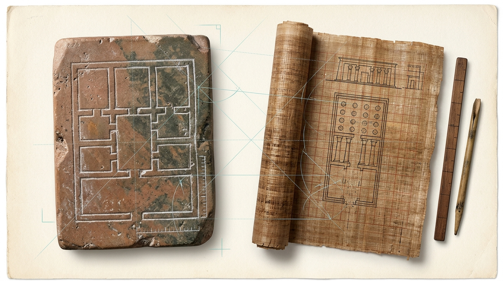
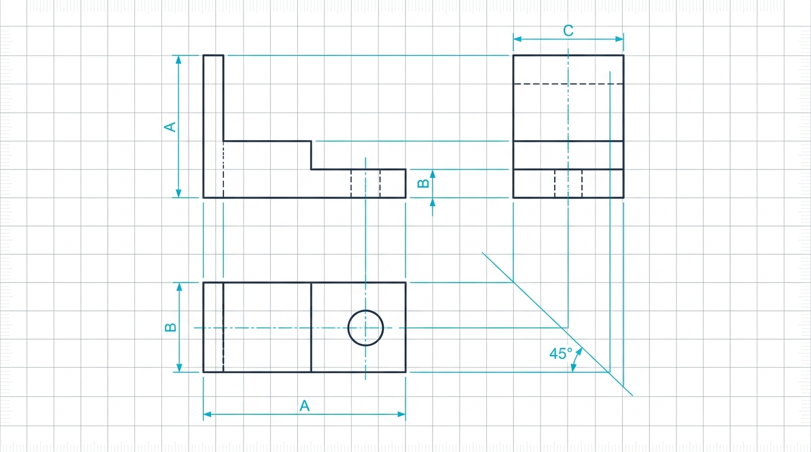

SECCIÓN 02 · EQUIPAMIENTO
Instrumentos y Herramientas
Regla T, escuadras, compás, escalímetro, calibrador pie de rey y software CAD con tabla comparativa.
Abrir página →El dibujo técnico es el sistema normalizado de representación gráfica que permite definir con exactitud la forma, dimensiones, tolerancias y materiales de un objeto antes de su fabricación o construcción. Es el lenguaje común indispensable entre la ingeniería, la arquitectura y la industria manufacturera.

Accede a la página dedicada de cada segmento para explorar láminas, historia, herramientas y aplicaciones reales.

Regla T, escuadras, compás, escalímetro, calibrador pie de rey y software CAD con tabla comparativa.
Abrir página →
De Mesopotamia y Egipto al Renacimiento, la geometría descriptiva de Monge y el CAD 3D.
Abrir página →
Vistas ortogonales, cortes, isometría, piezas mecánicas, acotación y plantas arquitectónicas.
Abrir página →
Mecánica industrial y mecatrónica, arquitectura y construcción, y esquemas eléctricos/PCB.
Abrir página →Conoce las seis herramientas clave para el trazado geométrico, la medición metrológica y el diseño digital.
Guía paralela sobre el tablero de dibujo para trazos horizontales y soporte directo de escuadras.
Combinadas entre sí generan ángulos múltiplos de 15° y perpendiculares de alta exactitud.
Trazado de circunferencias, empalmes tangentes y traslado fiel de distancias sobre la lámina.
Regla prismática con seis escalas directas de reducción para planos arquitectónicos y civiles.
Medición directa de piezas reales en exteriores, interiores y profundidades con nonio Vernier.
Entorno vectorial 2D y paramétrico 3D con capas normalizadas, bloques y exportación directa a taller.